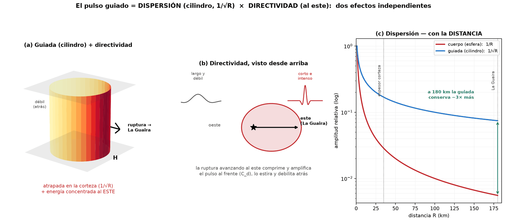
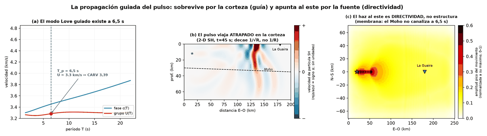

Método · la guía de ondas cortical — La Guaira, 24-jun-2026
Supervivencia y puntería: el pulso llega al litoral guiado en la corteza y concentrado al este por la directividad. Tres cálculos sobre el modelo cortical local, y una hipótesis que se deja escrita porque la prueba la descarta.
Hay una objeción que se hace sola al leer los resultados de la portada. Si la radiación de alta frecuencia del M 7,2 no se aleja más de ~35 km de su epicentro, ¿cómo alimenta el pulso que llega con fuerza al litoral, a ~180 km? Parte de la respuesta es de fuente —la directividad—; la otra parte es de propagación, y es de la que trata esta sección.
La amplitud que recibe el litoral se puede escribir como el producto de dos cosas que no tienen nada que ver entre sí:
amplitud ∝ Cd(θ) × 1/√R
El primer factor es la directividad, que depende del azimut: la ruptura avanzando hacia el este comprime y amplifica el pulso al frente. El segundo es la dispersión geométrica, que depende de la distancia — y es aquí donde entra la corteza.
Una onda de cuerpo en un medio infinito reparte su energía sobre una esfera que crece, de área 4πR²; la amplitud cae como 1/R. Pero el pulso del M 7,2 tiene un período largo, Tp ≈ 6,5 s, y por tanto una longitud de onda λ = β·Tp ≈ 22 km, comparable al espesor de la corteza. En ese régimen la onda queda atrapada entre la superficie libre y el Moho: no puede crecer hacia arriba ni hacia abajo, solo hacia los lados. El frente deja de ser una esfera y pasa a ser un cilindro de altura fija, de área 2πR·H. Como H está congelada por la guía, el área crece solo con R, y la amplitud cae como 1/√R.

La idea anterior es plausible, pero hay que someterla al modelo de la zona: el de FUNVISIS (STATION0.HYP) con el Moho a 35 km en la costa central confirmado por sísmica de gran ángulo (Schmitz et al., 2021). Se hicieron tres comprobaciones, cada una capaz de desmentir a la anterior.
La ecuación de dispersión de ondas Love da, a T = 6,5 s, un modo fundamental con velocidad de fase 3,45 km/s y de grupo 3,28 km/s — que coincide con los ~3,39 km/s medidos en el arribo de la S en Cajigal. El período del pulso cae, además, cerca de la fase de Airy, donde la energía de una banda de períodos llega agrupada.
Una propagación 2-D SH por diferencias finitas, en sección E–O con el Moho engrosando de 30 a 35 km, muestra el pulso atrapado en la corteza —sin fugarse al manto— y llegando coherente al litoral, con la amplitud decayendo 1/√R y no 1/R.
Un modelo de onda de membrana en planta revela que a este período el modo es casi insensible al espesor del Moho: la velocidad varía menos del 1 % entre 22 y 42 km de corteza. La configuración cortical no concentra lateralmente el pulso.

El punto de partida incluía un mecanismo adicional atractivo: que la franja cortical costera —acotada al norte por el adelgazamiento hacia el Caribe y al sur por el engrosamiento bajo la Cordillera— actuara como una guía lateral que canalizara la energía a lo largo de la costa, hacia La Guaira. Habría sido un segundo argumento, independiente de la directividad, para explicar el daño del litoral.
A este período el modo Love no distingue un Moho de 22 km de uno de 42. La guía lateral no opera para el pulso destructor, y el haz hacia el este es directividad de fuente, no estructura. Se conserva el planteamiento porque a períodos más cortos el mecanismo sí importaría, y porque un mecanismo descartado con una prueba es información, no un descarte silencioso.
Queda en pie, sin explorar, una tercera vía: las ondas atrapadas en zona de falla, confinadas en la roca fracturada y de baja velocidad a lo largo del rumbo. No está modelada y no se afirma nada sobre ella.
En conjunto: el pulso llega al litoral guiado en la corteza —por eso un evento de radiación acotada alimenta un pulso destructor a 180 km— y concentrado al este por la directividad de la ruptura, sobre lo que actúa finalmente la amplificación de la cuenca costera. Supervivencia y puntería son efectos independientes que se multiplican.
Esta sección recoge material de trabajo —anexo del primer artículo y puente con el segundo— en estado de preparación, no de resultado publicado. El modelo de velocidades es el de FUNVISIS; el mapa de Moho, de Schmitz et al. (2021), revisado por pares.
{kind=link}
{kind=link}